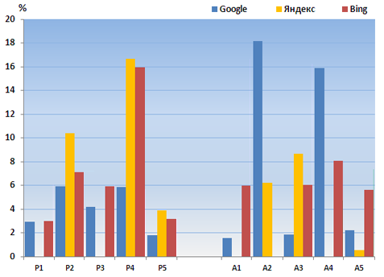

Отчет о результатах поиска
Поисковый отчет позволяет оценить информационную ситуацию по теме магистерской работы. Он является автивным инструментом фиксирования результатов и динамики информационного поиска, а также служит для оценки полноты найденных сведений и выявления новизны.
Поиск проходил в поисковых системах (Google, Яндекс, Bing). Результаты сведены в таблицы. Всего сделано 10 запросов, которые совпадают с ключевыми словами. Из них 5 запросов характеризуют тему исследования на русском языке, а остальные 5 отражают тему на английском языке.
Поиск проводился дважды: в начале работы над темой, и повторно, с тем чтобы оценить появление новых публикаций, а также динамику, которая отражает интерес к проблемам, исследуемым в теме работы.
Отчет о поисках от 01.10.2023 г.
| Поисковый запрос | 
| |||
| На русском языке | ||||
| Исследование методов минимизации числа состояний неполностью определенных автоматов | 10 100 | ≈2 тыс. | 429 | |
| Петров Петр Петрович, ДонНТУ | 101 | 4 238 | 183 | |
| Минимизация числа состояний | 38 100 | ≈2 тыс. | 10 100 | |
| Неполностью определенные автоматы | 1 700 200 | ≈6 тыс. | 1 190 000 | |
| Конечные автоматы | 195 500 000 | ≈77 тыс. | 28 200 000 | |
| На английском языке | ||||
| Hardware optimization of control unit's logic circuit on programmable logic devices | 605 000 | ≈4 тыс. | 35 100 | |
| Petr Petrov, DonNTU | 33 | 161 | 3 | |
| Hardware optimization | 59 100 000 | ≈23 тыс. | 19 900 000 | |
| Logic circuit of control units | 3 150 000 | ≈12 тыс. | 21 100 000 | |
| Control unit | 180 000 000 | ≈180 тыс. | 301 000 000 | |
Отчет о поисках от 01.12.2023 г.
| Поисковый запрос |
| |||
| На русском языке | ||||
| Исследование методов минимизации числа состояний неполностью определенных автоматов | 10 400 | ≈2 тыс. | 442 | |
| Петров Петр Петрович, ДонНТУ | 107 | 4 678 | 196 | |
| Минимизация числа состояний | 39 700 | ≈2 тыс. | 10 700 | |
| Неполностью определенные автоматы | 1 800 000 | ≈7 тыс. | 1 380 000 | |
| Конечные автоматы | 199 000 000 | ≈80 тыс. | 29 100 000 | |
| На английском языке | ||||
| Hardware optimization of control unit's logic circuit on programmable logic devices | 615 000 | ≈4 тыс. | 37 200 | |
| Petr Petrov, DonNTU | 39 | 171 | 3 | |
| Hardware optimization | 60 200 000 | ≈25 тыс. | 21 100 000 | |
| Logic circuit of control units | 3 650 000 | ≈12 тыс. | 22 800 000 | |
| Control unit | 184 000 000 | ≈181 тыс. | 318 000 000 | |
Анализ результатов
Сравнение результатов поиска по ключевым понятиям показало, что наилучшие результаты дает поисковая система Google. По всем запросам была найдена достаточная информация по теме работы.
Результаты показали, что поисковая система Яндекс дает меньшее число документов по теме исследования на русском языке. Запросы к поиску через Яндекс в основном иллюстрируют динамику, которая отображает увеличение страницы.
При сравнении с другими системами и запросе в Англии, поисковая система показала, что для всех запросов показано увеличение количества страниц поисковых систем. Наибольший динамизм показал запрос с поиском в течение последнего месяца по нескольким ключевым темам.

Динамика изменения количества результатов поиска в Яндекс и Google
Из полученных данных следует, что количество всех найденных страниц за прошедшее время увеличилось примерно на 20 %, а для некоторых поисковых запросов количество страниц не изменилось.
Наибольший объем документов показывают запросы для широких тематических областей.
Так, например, количество найденных страниц в поисковой системе Google для запроса Logic circuit of control units
возросло на 16 %,
а количество ответов по запросу Конечные автоматы
в системе Bing возросло лишь на ≈3 %.
При этом некоторые запросы по результатам поиска не изменились (например, Минимизация числа состояний
в системе Яндекс).